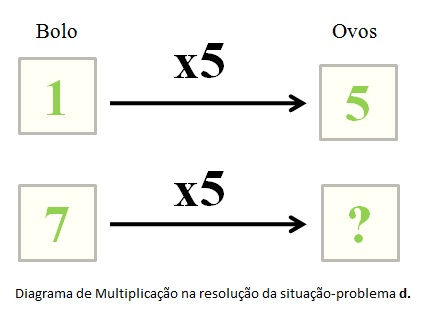
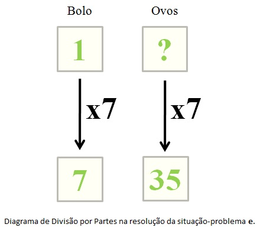
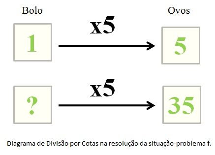

1. Multiplicação
Observe a situação-problema d:
Um bolo leva 5 ovos. Quantos ovos são necessários para fazer 7 bolos?
Neste tipo de situação, desconhece-se o valor total e conhece-se o número de partes e o valor de cada parte. Nesse caso, o valor total é encontrado multiplicando-se o número de partes pelo valor de cada parte.

2. Divisão por Partes
Observe a situação-problema e:
Para fazer sete bolos, são necessários trinta e cinco ovos. Se todos os bolos têm a mesma receita, quantos ovos são necessários para fazer somente um bolo?
Neste tipo de situação, desconhece-se o valor de cada parte e conhece-se o valor total e o número de partes. Nesse caso, o valor de cada parte é encontrado dividindo-se o valor total pelo número de partes.

3. Divsão por Cotas
Observe a situação-problema f:
Quantos bolos podem ser feitos com trinta e cinco ovos, se cada bolo leva cinco ovos?
Nesse tipo de situação, desconhece-se o número de partes e conhece-se o valor total e o valor de cada parte. Nesse caso, o número de partes é encontroado dividindo-se o valor total pelo valor da cada parte.
